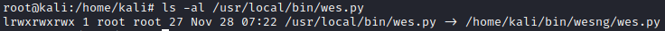

install/remove program
list of all the packages installed on the
system
Install
cd /home/kali/bin/
git clone https://github.com/bitsadmin/wesng.git
cd wesng
ln -s /home/kali/bin/wesng/wes.py /usr/local/bin #create a symbolic link to the tool in /usr/local/bin.
With the command
ln we create a symbolic link of the file in the path "/usr/local/bin". A symbolic link
contains a path pointing to the original file or directory.
This affect all users on the system
Now we can
use the command "wes.py of the tool in whatever path of the system
Bibliography:
https://scriptingosx.com/2018/04/installing-and-using-command-line-tools/ConfigureIf
in the folder of tool there is a script called "
configure", we need to run this script first, which checks your
environment and creates a set of options necessary to get the tool compiled on your device.
After running
configure, you run the
make command, which compiles and builds the
tool.
Then, by typing
make install, the program is loaded into
the appropriate place
./configure
make
make install
Remove program
sudo apt-get remove <package-name>